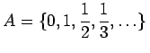

Inhalt Index DeskTop Bronstein

 Dynamische Systeme und Chaos Quantitative Beschreibung von Attraktoren Dimensionen Metrische Dimensionen
Dynamische Systeme und Chaos Quantitative Beschreibung von Attraktoren Dimensionen Metrische Dimensionen


Sei A im weiteren eine relativ kompakte Menge des metrischen Raumes  und sei die minimale Anzahl von Mengen vom Durchmesser , die nötig ist, um A zu überdecken. Die Größe
und sei die minimale Anzahl von Mengen vom Durchmesser , die nötig ist, um A zu überdecken. Die Größe
| (17.41a) |
heißt obere Kapazitätsdimension oder fraktale Dimension, die Größe
| (17.41b) |
heißt untere Kapazitätsdimension von  . Gilt , so heißt dC(A) Kapazitätsdimension von
. Gilt , so heißt dC(A) Kapazitätsdimension von  .
.
Für eine beschränkte Menge kann in den obigen Definitionen die Zahl  auch folgendermaßen definiert werden: Der
auch folgendermaßen definiert werden: Der  wird mit einem Gitter aus n-dimensionalen Würfeln der Seitenlänge
wird mit einem Gitter aus n-dimensionalen Würfeln der Seitenlänge  überdeckt. Dann kann für
überdeckt. Dann kann für  die Anzahl der Würfel des Gitters, die A schneiden, genommen werden.
die Anzahl der Würfel des Gitters, die A schneiden, genommen werden.
Wichtige Eigenschaften der Kapazitätsdimension:
| Beispiel |
|
Sei . Dann gilt dH(A) = 0 und . |